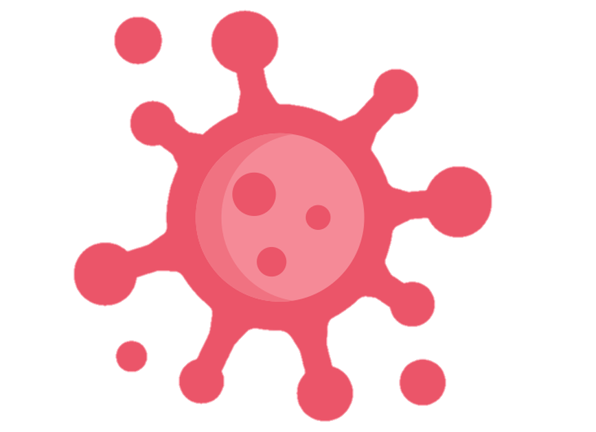

Sexo e infecções sexualmente transmissíveis

Fazer sexo oral e/ou anal sem proteção pode pegar uma infecção sexualmente transmissível?
Sim
Não
Se sim, qual(is):
Fazer sexo sem camisinha pode levar a ter infecções sexualmente transmissíveis?
Sim
As vezes
Não
voltar
menu
próximo